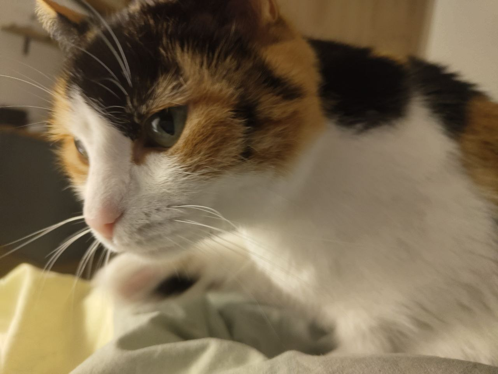
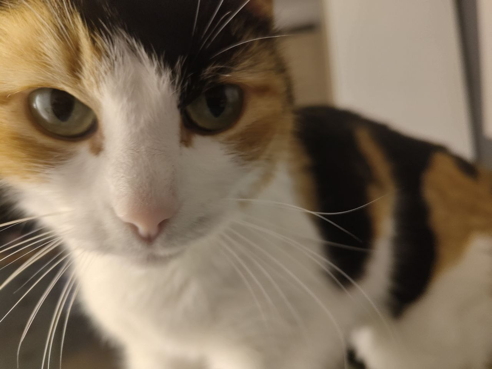
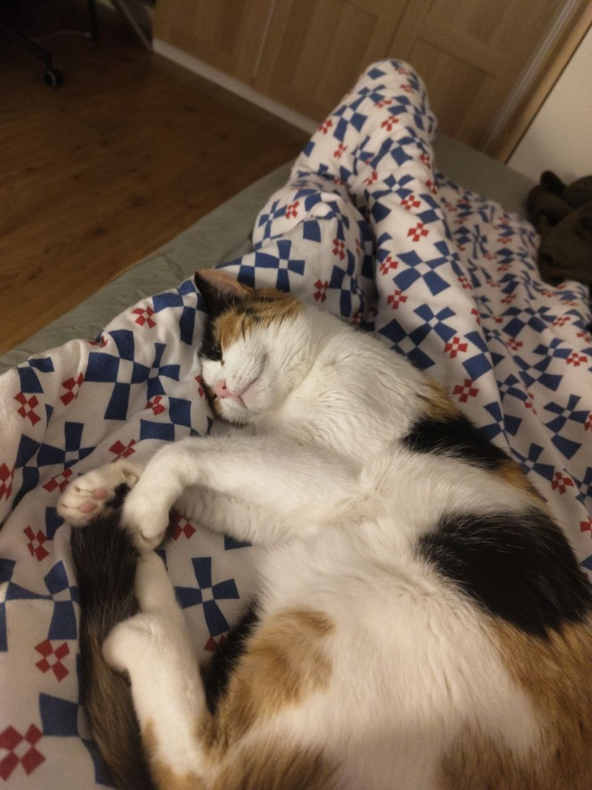
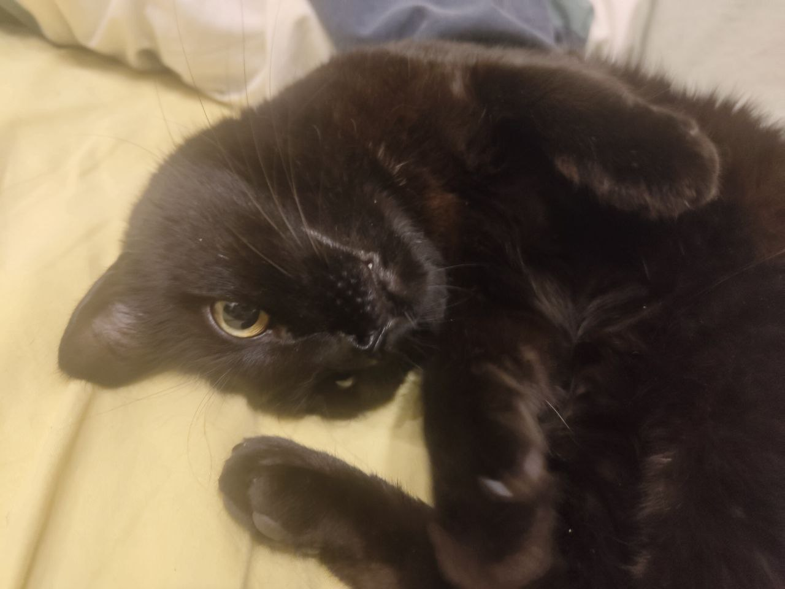
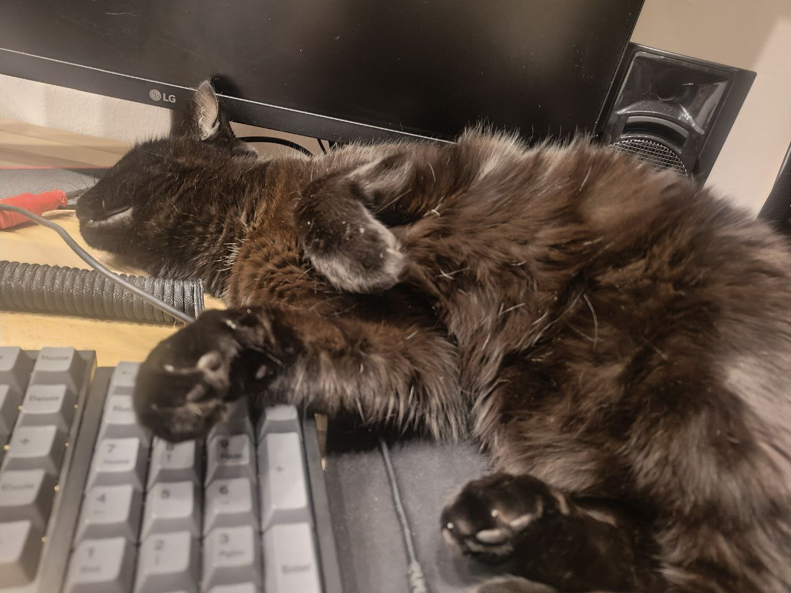
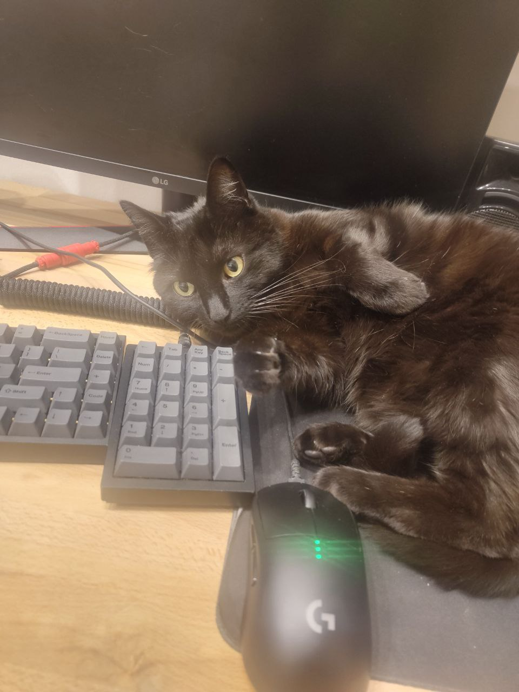
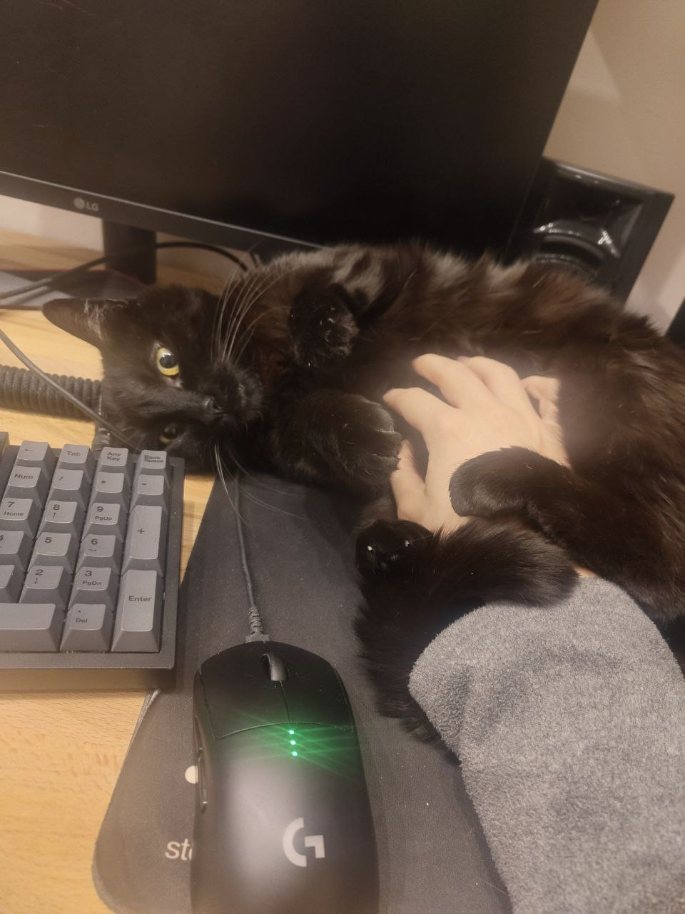
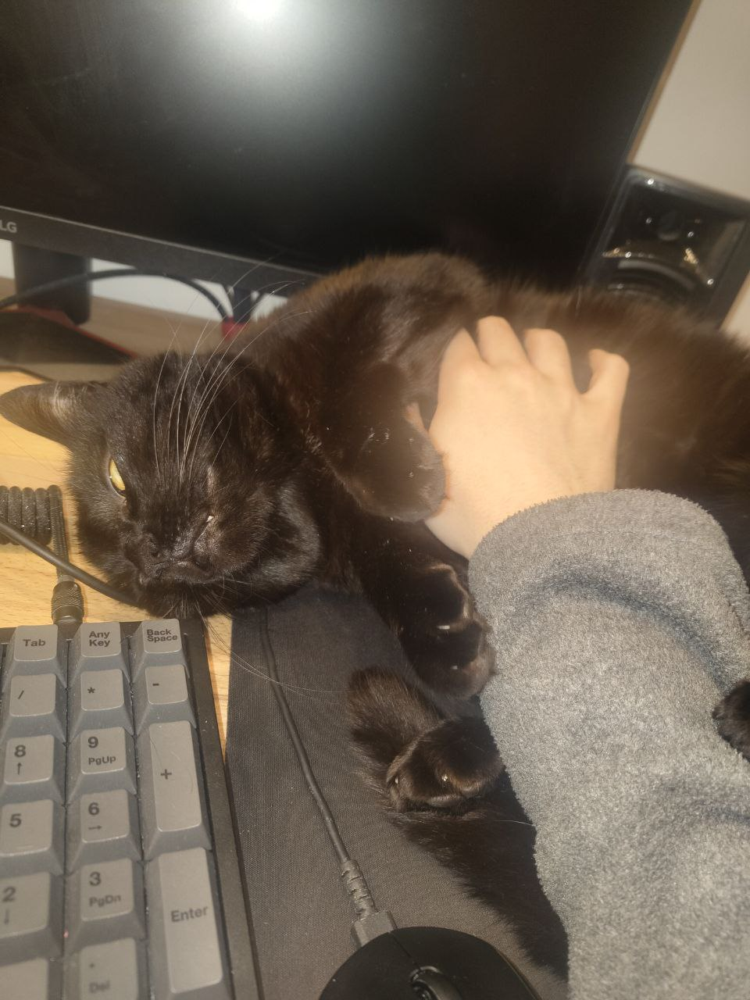

She is very similar to me: she is super afraid of strangers, acts cold to most people, and appears weird in most pictures even though she's cute IRL.




Giorgino, age 6, male.
The name in italian sounds like "small George" (check out "diminutive" on Wikipedia)
He is the opposite of me, he likes people and looks for them.


Oh yeah so that mouse is a G Pro Wireless by logitech, and huh, well, I'm kinda starting to hate
it now, like, it started double clicking randomly.
Apparently it's a common problem for that model of mouse, mine has his years (about 5) still I
paid 100 euros for it I don't wanna change it, RIP!! I hate that!!!

Uhm, so that's from when I used to shave my hands. Still do from time to time. A boy I dated for
a short while found them cute.

He always does this expresson where you can see his teeths, which seems lika he's smiling even though cats doesn't smile (they lack the muscles to do so)
They hate each other for some reason. Actually no that isn't true, Giorgino loves Rose but she hates him for some reasons.